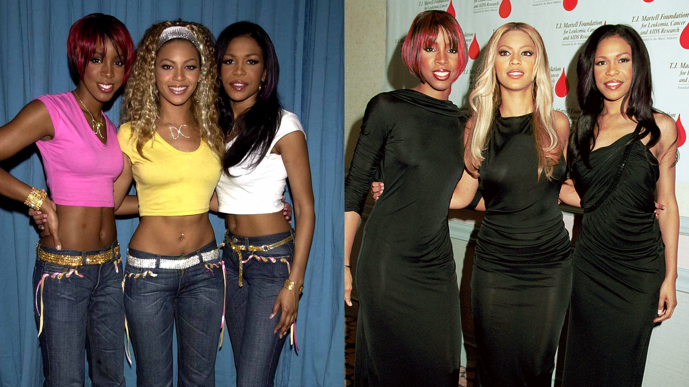

About Us
Destiny's Child was an American girl group formed in Houston, Texas, in 1990. Its final lineup comprised Beyoncé, Kelly Rowland, and Michelle Williams. Known for their vocal harmonies, stage performances, and themes of female empowerment, Destiny's Child is regarded as one of the most influential girl groups in popular music.
